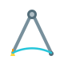

Microsoft Power Customer Advisory Team
Succeed with Power Platform at enterprise scale.
Practical tools and field-tested guidance from the Microsoft team that helps enterprise customers turn Power Platform ambition into durable outcomes.
Microsoft-authored
Field-tested with customers
Tools
Build with proven foundations.
Tools shaped by real enterprise engagements, ready to accelerate delivery and reduce avoidable risk.


Guidance
Make decisions that hold up.
Architecture and operating guidance for teams building Power Platform into the fabric of the enterprise.

Architecture Center Use established patterns and reference architectures for Power Platform. View Architectures Power Platform Well-Architected Design workloads for reliability, security, and operational excellence. View the Framework Power Platform Guidance Translate platform strategy into an actionable adoption approach. Read GuidanceResources
Develop capability that lasts.
Focused resources that help teams grow practical Power Platform skills and apply them with confidence.

Customer Stories
Learn from work already in motion.
See how people and organizations use Power Platform to change processes, careers, and customer outcomes.